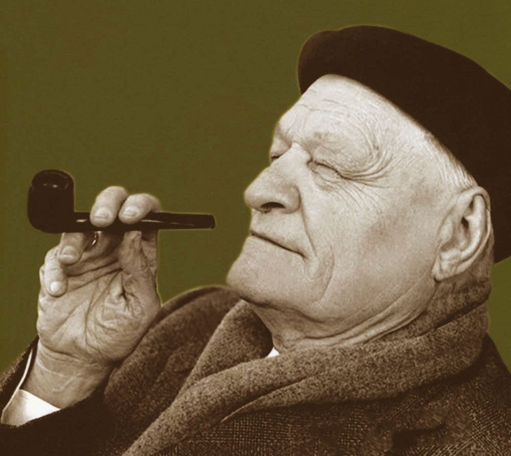
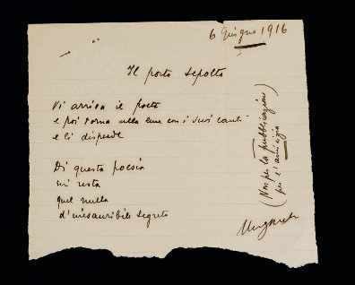

Filologia d'autore
Filologia d'autore


Placeholder
Biografia
Perché Ungaretti è così importante per la poesia italiana? Chi era e che cosa ha scritto?
Placeholder
Che cos'è la Filologia d'autore
La filologia d’autore si occupa dello studio delle varianti, presenti su manoscritti o stampe, dovute a una diversa volontà degli autori relativamente alle loro opere...